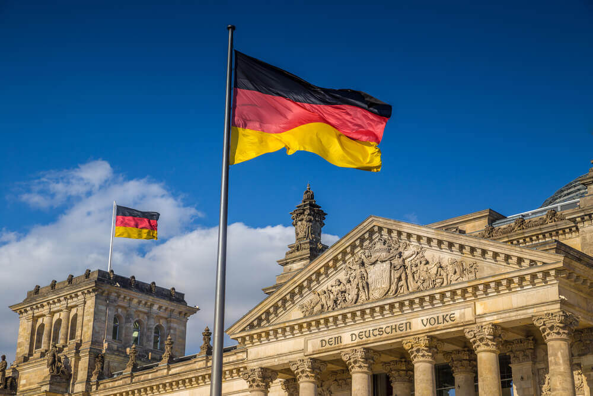

Alemanha é um país que fica na região central do continente Europeu, sendo o mais populoso da Europa Ocidental. Possui mais de 2 milênios de história, tendo participado de importantes eventos históricos.
No início da colonização, a região da Alemanha foi habitada por tribos finesas e depois pelos celtas, que foram expulsos para regiões ocidentais pelos bárbaros.
O Reino Franco foi o mais importante daquela época (início da Idade Média) e foi criado pelos germânicos na Gália.
O Reino da Germânia surgiu depois do tratado de Verdun, quando se tornou uma monarquia eletiva. O Império Romano Germânico surgiu tempos depois, pelo Imperador Otho, o Grande. Os senhores feudais tinham o poder nessa região, exercendo importantes decisões.

Em 1871 foi criado o império Alemão, tendo como seu principal constituinte o Reino da Prússia, o império era uma junção de todas as partes da Alemanha, menos da Áustria.
No começo de 1884, a Alemanha criou novas colônias fora da Europa, isso trouxe vários benefícios para o império, como um grande crescimento econômico e industrial. Depois desse período, a política externa do Imperador Guilherme II fez uma grande nação europeia, através das alianças comercias e políticas com outros países europeus. Mas o mesmo Imperador tomou um rumo imperialista depois de atritos com os países vizinhos, boa parte das alianças que a Alemanha tinha feito com outros países não foram renovadas, o país foi se tornando cada vez mais isolado.
Esse imperialismo alemão ultrapassou as fronteiras do país e se juntou a outros países da Europa, que tomaram a sua cota na África.
Outro importante evento foi a Reforma Protestante, que aconteceu no século XVI, quando a Alemanha estava passando por lutas religiosas e foi dividida em duas partes, protestantes e católicos.
Já no início do século XVI, com o comando de Napoleão Bonaparte, a região foi conquistada pelos franceses. No final do século a Alemanha foi unificada.
A Alemanha teve uma grande participação nas guerras mundiais no século XX. Na Primeira Guerra Mundial formaram a Tríplice Aliança junto com o Império Austro-Húngaro e Itália, mas foi derrotada e condenada pelo Tratado de Versalhes a pagar os prejuízos causados. E o último Imperador, Guilherme II, teve o fim do seu reinado após a derrota do país.
Hitler assume o poder depois disso e espalha o Nazismo, levando a Alemanha pra Segunda Guerra Mundial, onde mais uma vez, saíram derrotados.
Depois dessa derrota, a Alemanha foi divida em duas partes, capitalismo e socialismo. Houve uma reunificação apenas em 1990, por causa da queda do Muro de Berlim, que representou a vitória do capitalismo sobre o socialismo, iniciando a globalização.
Atualmente, a Alemanha é um dos países mais desenvolvidos que existem, tendo uma forte economia e sendo um país democrático.